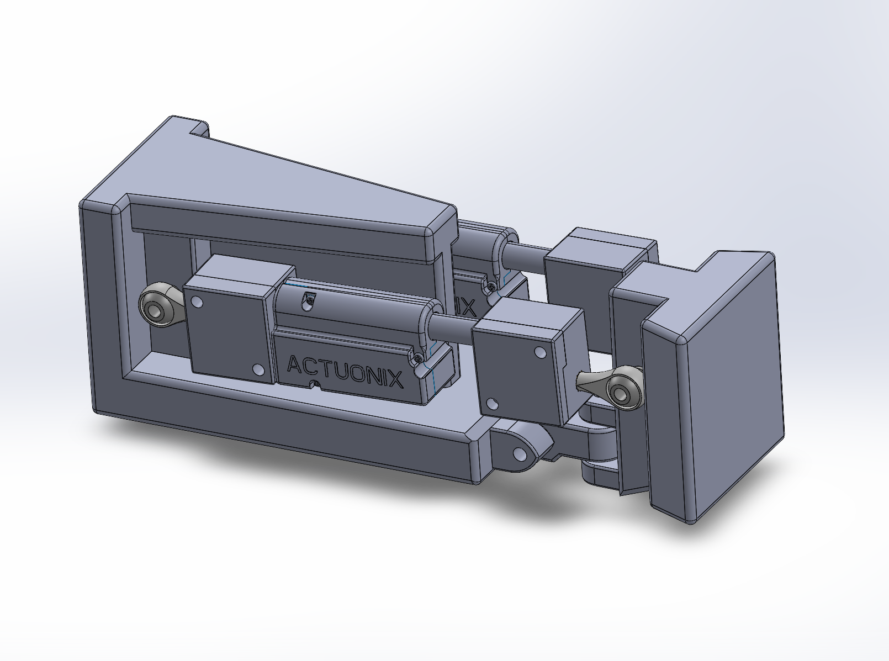
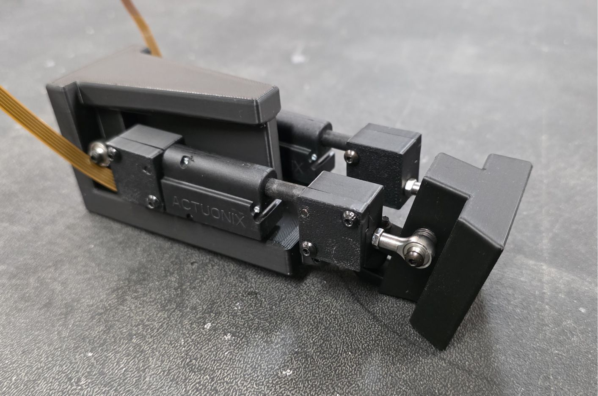

2-DOF Humanoid Wrist Mechanism Prototype
Designed, modeled and fabricated a 2-degree-of-freedom wrist prototype using SolidWorks for the Humanoid Robot Club. Handled the CAD assembly and the integration of 3D-printed components.



Overview: I engineered this mechanism to enable complex hand movements while ensure that it remains lightweight, minimizing the moment arm to reduce power consumption on the shoulder motors.
Design Implementation: To prevent back-driving without constant power draw, I utilized two small linear actuators with internal locking mechanisms rather than pneumatics, hydraulics or even rotary motors coupled with a slider-crank linkage. This configuration, paired with spherical joints, provides active control over yaw and pitch.
Technical Challenges: The initial design used a central spherical joint to mount the end effector, which inadvertently introduced a passive roll degree of freedom. I resolved this by designing a custom yaw-pitch connection piece in SOLIDWORKS to eliminate the passive rotation, ensuring the end effector remains stable under external loads.